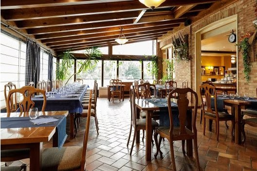
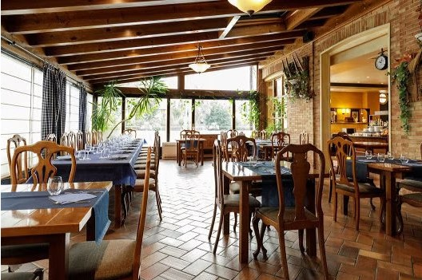

Gastronomia

La proximidad de Puente la Reina a la zona de huertas del sur facilita la presencia de productos hortícolas de gran calidad como pimientos, alcachofas, Espárragos con I.G.P. Navarra o diversas legumbres. Las alubias, blancas y rojas, son uno de los alimentos más presentes a la hora de comer en Puente la Reina, donde suelen tomarse acompañadas de carnes, embutidos o verduras. Entre los meses de septiembre y diciembre, se celebra en Puente la Reina el Mercado del Pimiento, donde pueden adquirirse todos estos productos agrícolas.
En cuanto a las carnes, la ternera es la más extendida, siempre en forma de entrecots, solomillos o chuletones a la brasa. Tienes que probar el cordero. Suele cocinarse al chilindrón. Mientras el conejo, la perdiz y la codorniz son las piezas de caza más apreciadas.
Otros platos frecuentes para comer en Puente la Reina son las magras con tomate, el bacalao al ajoarriero o las truchas con jamón. Por último, siempre es recomendable acompañar estas especialidades con alguno de los productos vinícolas de la zona. Degusta el Vino D.O. Navarra, el Vino D.O. Pago de Arínzano, el Vino D.O. Pago de Otazu y el Vino D.O. Prado de Irache.
Donde comer en Puente la Reina
 

Si la opción escogida para comer en Puente la Reina es el tapeo, la localidad cuenta con buenos bares. Algunos de ellos son Very, que también tiene bocadillos y platos contundentes de cuchara, o Gares, con elaboraciones muy cuidadas y tapas gourmet.
Hay muchos lugares donde comer "a la carta" en Puente la Reina. El restaurante La Conrada es uno de los principales gracias a su cocina casera y tradicional, elaborada a base de ingredientes frescos de procedencia regional. Ofrece además una amplia carta de tapeo.
El restaurante del hotel Jakue es otro lugar recomendable en Puente la Reina. Su cocina es también de corte tradicional y, aparte de carta y menú, pone a disposición de sus clientes un atractivo servicio de buffet pensado para peregrinos. El restaurante Bidean se encuentra ubicado en una antigua bodega, en los bajos del hostal con el que comparte nombre. Su cocina se centra en carnes, pescados y otras especialidades propias de la cocina navarra.
En La Plaza, otro clásico en Puente la Reina, se prepara una cocina sencilla y eficaz, propia de la tradición gastronómica de estas tierras; cuenta con varios menús diferentes y una amplia oferta de tapas y cazuelas. En el caso de que lo que se busque sea un lugar especializado en la organización de banquetes para bodas, comuniones y otros eventos, los salones de Bodega de Sarria son el lugar adecuado.
| Restaurante | Tipo | Precio | Dirección | Teléfono | Web |
|---|---|---|---|---|---|
| Bar Cervecería Very | Mediterránea, Española | € | Calle El Cerco nº3, 31100 Puente la Reina España | 948 34 10 90 | www.cerveceriavery.es |
| Bar Gares | Mediterránea, Española, Contemporánea | €€ - €€€ | Paseo de los Fueros 38, 31100 Puente la Reina España | 948 34 00 77 | www.bargares.es |
| Restaurante La Conrada | Española, Vasca, Opciones vegetarianas | €€ - €€€ | Paseo de los Fueros 17, 31100 Puente la Reina España/td> | 9948 34 00 52 | www.restaurantelaconrada.com |
| Hotel Jakue Restaurante | Mediterránea, Española | €€ - €€€ | Calle Irunbidea 34, 31100 Puente la Reina España | 948 34 10 17 | www.jakue.com |
| Restaurante Hotel Bidean | Española | €€ - €€€ | Calle Mayor 20, 31100 Puente la Reina España | 948 34 11 56 | www.bidean.com |
| Bar Restaurante La Plaza | Española, Opciones vegetarianas | €€ - €€€ | Calle Mayor 52, 31100 Puente la Reina España | 619 31 20 55 | www.barrestaurantelaplaza.es |